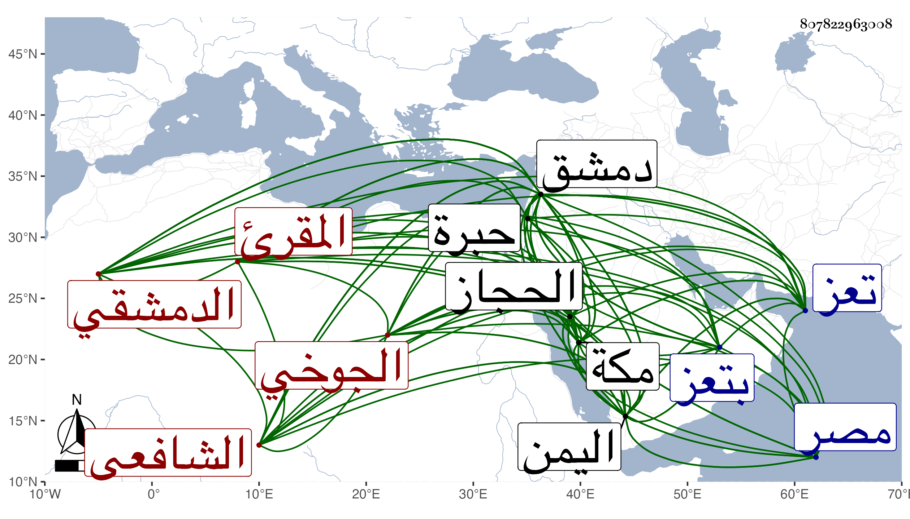

0902Sakhawi.DawLamic.ITO20230111-ara1.EIS1600.807822963008
Biography ID: 807822963008
538
أحمد بن محمد بن محمد بن يوسف بن علي بن يوسف بن عياش الشهاب أبو العباس الجوخي الدمشقي المقرئ الشافعي نزيل تعز ووالد الزين عبد الرحمن الآتي ويعرف بابن عياش . ولد في أحد الربيعين سنة ست وأربعين وسبعمائة وتعانى بيع الجوخ فرزق فيه حظا وحصل منه دنيا طائلة وعني بالقراءات فقرأ على الشمس العسقلاني وبدمشق على الشمس محمد بن أحمد اللبان وعبد الوهاب بن السلار وأسمع في صغره على علي بن العز عمر حضور جزء عرفة وحدث به عنه بمكة وغيرها وكذا سمع من البياني وابن قوالح وتصدى للقراءات وانتفع به جمع من أهل الحجاز واليمن ولقن جمعا القرآن احتسابا وكان بصيرا بالقراءات دينا خيرا غاية في الزهد في الدنيا ترك بدمشق أهله وماله وخيله وخدمه وساح في الأرض مع مواظبته وهو بدمشق على صلاة الأولى بجامعها الأموي وتلاوته كل يوم نصف ختمة وجاور بمكة مدة ثم دخل اليمن فأقام به عدة سنين في خشونة من العيش ومداومة على الأمر بالمعروف والنهي عن المنكر . وقد ذكره ابن الجزري في طبقات القراء وقال : صاحبنا أبو العباس فاضل كامل مقرئ خير صالح دين أخذ السبع عن شيخنا ابن اللبان وابن السلار وجلس للإقراء بالجامع الأموي وانتفع به جماعة مع التقوى والسكون وهو في زيادة علم وخير قرأ عليه السبع صدقة بن سلامة ثم رحل إلى مصر فقرأ ختمة بالعشر على الشمس العسقلاني ، وعاد إلى دمشق فأقرأ بها وبالقدس والخليل وغيرها ، وقال في موضع آخر أخونا في الله وصاحبنا في تلاوة كتاب الله الشيخ الإمام العلامة الصالح الخاشع الناسك الذي جمع بين العلم والعمل فترك الدنيا وأعرض عن الخلق حتى جاءه الأجل . وقال ابن قاضي شهبة أنه حكى له أنه كان يشتري البيعة بخمسين ألفا فربما يربح في الحال من مشتر غيره خمسة آلاف ، وأرخ وفاته في ثاني شعبان وقال عمر بن حاتم العجلوني لم أر أحدا على طريقة السلف في رفض الدنيا وراء ظهره مع إقبالها عليه والقدرة عليها مثله وله سماع ورواية . مات في حادي عشري ريع الآخر سنة اثنتين وعشرين بتعز وهو عند المقريزي في عقوده رحمه الله .
